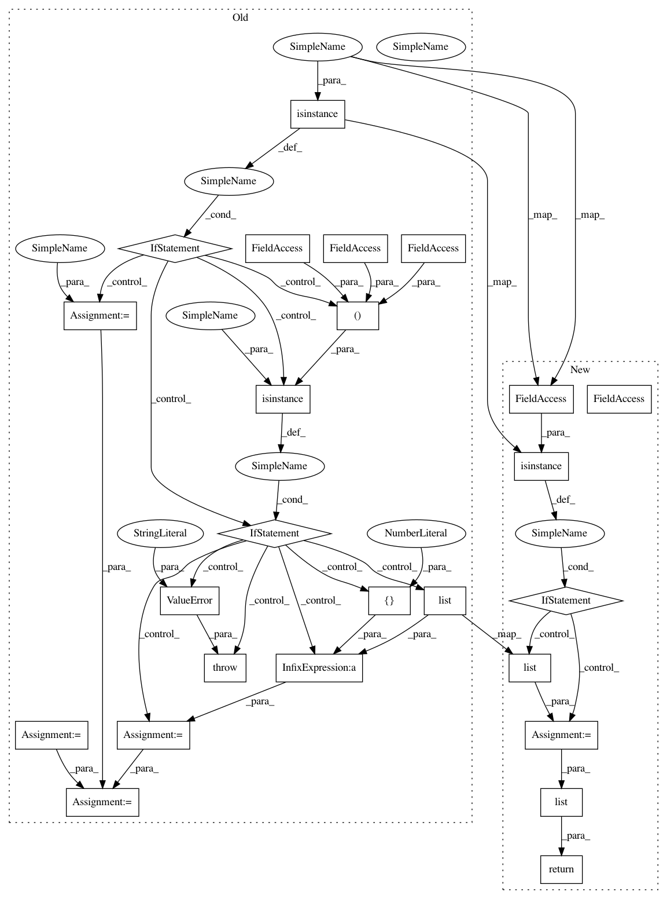

a960f5a6eb5b39b3e702b3be4c938a313fcec572,python/mxnet/ndarray/numpy/_op.py,,array_split,#Any#Any#Any#,3747
Before Change
[array([0., 1., 2.]), array([3., 4.]), array([5., 6.])]
indices = []
sections = 0
if isinstance(indices_or_sections, integer_types):
sections = indices_or_sections
elif isinstance(indices_or_sections, (list, set, tuple)):
indices = [0] + list(indices_or_sections)
else:
raise ValueError("indices_or_sections must be either int, or tuple / list / set of ints")
ret = _npi.split(ary, indices, axis, False, sections)
if not isinstance(ret, list):
return [ret]
return ret
// pylint: enable=redefined-outer-name
After Change
>>> np.array_split(x, 3)
[array([0., 1., 2.]), array([3., 4.]), array([5., 6.])]
if isinstance(indices_or_sections, set):
indices_or_sections = list(indices_or_sections)
return list(_api_internal.array_split(ary, indices_or_sections, axis))
// pylint: enable=redefined-outer-name
// pylint: disable=redefined-outer-name
In pattern: SUPERPATTERN
Frequency: 3
Non-data size: 25
Instances
Project Name: apache/incubator-mxnet
Commit Name: a960f5a6eb5b39b3e702b3be4c938a313fcec572
Time: 2020-04-07
Author: 40382964+Tommliu@users.noreply.github.com
File Name: python/mxnet/ndarray/numpy/_op.py
Class Name:
Method Name: array_split
Project Name: apache/incubator-mxnet
Commit Name: 1efb747ad5cf695f181c64bfb16daccd6ca4c456
Time: 2020-03-17
Author: fhztc1997618@gmail.com
File Name: python/mxnet/ndarray/numpy/_op.py
Class Name:
Method Name: split
Project Name: apache/incubator-mxnet
Commit Name: a960f5a6eb5b39b3e702b3be4c938a313fcec572
Time: 2020-04-07
Author: 40382964+Tommliu@users.noreply.github.com
File Name: python/mxnet/ndarray/numpy/_op.py
Class Name:
Method Name: hsplit